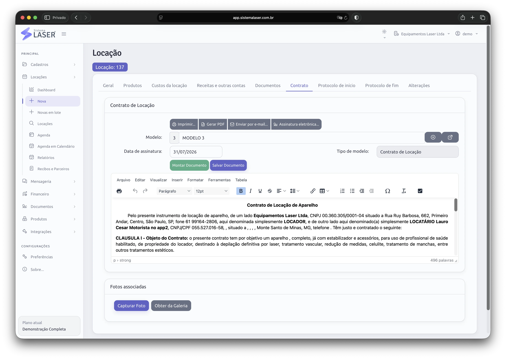

Acessos específicos
Perfis e permissões reduzem exposição desnecessária.
O Sistema Laser adapta agenda, logística, contratos, financeiro e controle de ativos ao tipo de equipamento e à estrutura comercial de cada empresa.
Cada unidade opera dentro de suas responsabilidades, enquanto a gestão acompanha o conjunto.
Perfis e permissões reduzem exposição desnecessária.
Dashboards ajudam a comparar e direcionar a operação.

Gerencie aparelhos médicos e hospitalares, equipamentos estéticos e lasers com rastreabilidade desde a reserva até a devolução.
Evite conflitos e acompanhe o equipamento ao longo da locação.
Registre condições de início e fim para proteger as partes.
Associe insumos e uso técnico ao processo correto.
Acompanhe reparos e custos do ativo ao longo do tempo.

Locadoras de construção civil e de outros segmentos encontram a mesma base para controlar disponibilidade, movimentação, documentos e cobrança.

O Sistema Laser organiza as relações comerciais que tornam a rede possível.

Escolha a aparência mais confortável para cada ambiente e mantenha a leitura agradável durante toda a rotina.

Conte quantos equipamentos, usuários, filiais e parceiros você administra.